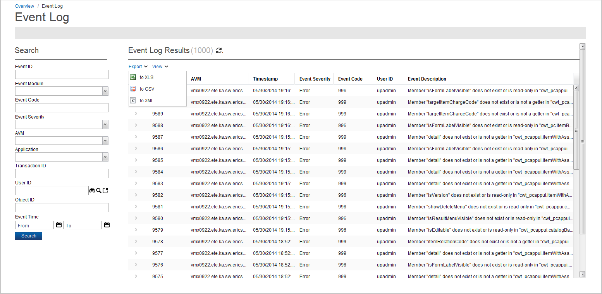

Export Results to a File
You can export results from report searches to one of the following file formats:
The following is an example of exporting results from the Event Log report:
- From the search results section, click Export. In this example, select the to XLS option to save the data to an Excel file.

- Depending on what Web browser you are using, you are prompted to open or select a directory location to save your file. The default filename is finder.xls. You can change this name, if required.
- When you open the .xls file, the results from the Event Log report appear in your exported file.
|